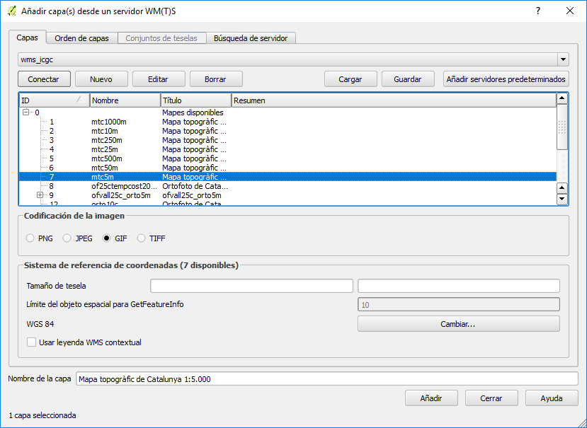

QGIS - Visualizar una capa WMS¶
Note
| Fecha | Autores |
|---|---|
| 14 Febrero 2017 |
|
©2017 Wladimir Szczerban
Excepto donde quede reflejado de otra manera, la presente documentación se halla bajo licencia: Creative Commons (Creative Commons - Attribution - Share Alike: http://creativecommons.org/licenses/by-sa/3.0/deed.es)
QGIS - Visualizar una capa WMS¶
Utilizaremos el programa QGIS para visualizar servicios WMS.
Abrir el QGIS desktop y crear un nuevo proyecto llamado mtig_sdi
Presionar el botón de agregar WMS/WMTS del QGIS para desplegar el diálogo de añadir capa

En el diálogo de añadir capa presionar el botón de nuevo para desplegar el diálogo de crear una nueva conexión.
En el diálogo de crear conexión debemos rellenar el campo nombre con el nombre que queremos dar a esta conexión y el campo URL con la dirección del servicio WMS. Una vez rellenados los campos presionar el botón de Aceptar.

En este caso utilizaremos la url del servidor WMS del ICGC.
http://geoserveis.icgc.cat/icc_mapesbase/wms/service?
En el diálogo de añadir capa presionar el botón de conectar para cargar el listado de capas del servicio.
 Seleccionar la(s) capa(s) que queremos cargar en nuestro mapa y presionamos el botón de Añadir. Nos debe cargar el servicio WMS en nuestro mapa.

Ejercicio:¶
- Agregar la capa pein de nuestro servicio WMS de Pein